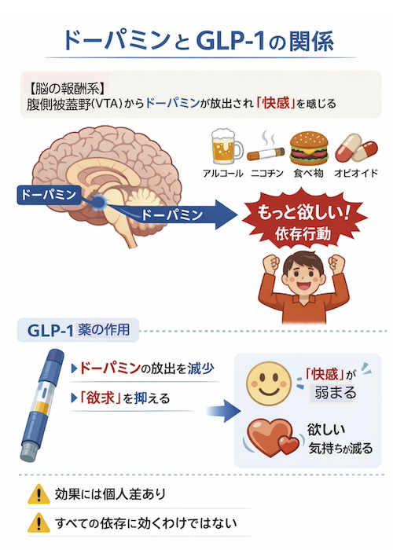

トップページに戻る
公開日：2026年6月｜最終更新：2026年6月
高齢者では、アルコールの影響が強く出やすく、健康への影響も大きくなります。
単なる嗜好品としてではなく、全身への影響や依存の問題として理解することが重要です。
肝臓だけではなく、全身にリスク（慢性炎症）を及ぼします。さらに、アルコール依存症を引き起こします。
１）アルコールによる健康リスク
アルコールは肝臓だけでなく、全身に影響を及ぼします。
- 慢性炎症の持続（動脈硬化・糖尿病のリスク）
- 転倒・骨折
- 認知機能の低下
- 睡眠の質の低下
- 食欲低下による栄養不足
コラム：アルコールの本質的リスク
アルコールは体内で分解される際に有害物質（アセトアルデヒド）を生じるため、
医学的には「一定の毒性を持つ物質」として扱われます。
さらに、脳の報酬系に作用することで依存を引き起こす可能性があり、
習慣的な摂取は「やめたくてもやめにくい状態」へとつながることがあります。
長期的な摂取は、肝障害にとどまらず、
脳機能低下、がん、慢性炎症など全身に影響を及ぼします。
「適量なら安全」と考えられがちですが、
健康リスクは少量から積み重なり、
依存のリスクもゼロではありません。
アルコールとがんのリスク
がんリスクの上昇
「飲酒する人は、アルコールに関連したがん（口腔がん、咽頭がん、喉頭がん、食道がん、乳がん、大腸がん、肝臓がん）の罹患リスクが高い」（Nature-digest, 22 (2025)より引用）
「アルコールによるリスクを合算すれば、ごく少量の飲酒がもたらす健康上の利点は、がんや他の病気のリスクの上昇によって相殺されてしまうというのが、ほとんどの研究者の意見だ。要するにアルコールは、本質的に体に悪い物質なのです。」（同上）
２）アルコールと慢性炎症（専門的）
アルコール摂取は腸管透過性の亢進や腸内細菌叢の変化を介して、
エンドトキシン（LPS）の流入を増加させ、全身性の慢性炎症を引き起こすと考えられています。
- NF-κB経路の活性化
- 炎症性サイトカイン（TNF-α、IL-6など）の増加
- インスリン抵抗性の増大
これらは、動脈硬化、サルコペニア、認知機能低下と関連します。
３）なぜ依存が起こるのか
アルコール依存は意志の問題ではなく、脳の仕組みによるものです。
脳の報酬系
アルコールなどの刺激により、脳の「腹側被蓋野」からドーパミンが放出され、
「快感」や「もっと欲しい」という感覚が生まれます。
この仕組みは、ニコチン・食べ物・薬物などにも共通しています。

４）GLP-1という新しい視点
近年、糖尿病や肥満治療に使われるGLP-1薬が、
依存行動にも影響する可能性が注目されています。
（注意）(専門的）
糖尿病薬、抗肥満薬であるGLP-1受容体作動薬は、嗜好性を低下させる可能性が報告されており、アルコール依存などへの応用が研究されています。
しかし、現時点では、主に肥満を対象とした治療薬であり、食欲の低下による体重減少から、栄養失調、フレイルにつながるリスクも指摘されています。
仕様については医師と十分に相談されることが重要です。
コラム：GLP-1とは？
GLP-1は、食後に腸から分泌される「ホルモン」で、血糖を下げるとともに食欲を抑えます。
また、脳の報酬系に作用し、「もっと欲しい」という欲求を弱める可能性があります。
上で示した「GLP-1薬」は、GLP-1の働きを模倣して作られた糖尿病治療薬です。
GLP-1の作用が強くなると、食欲低下による体重減少が起こるため、
高齢者では低栄養やフレイルに注意が必要です。
５）注意すべきポイント
重要な視点
- GLP-1薬はすべての依存に有効とは限らない
- 効果には個人差がある
- 高齢者では体重減少に特に注意が必要
６）まとめ
高齢者は、アルコールの影響を受けやすく、肝臓だけではなく、全身に慢性炎症を引き起こし、動脈硬化、糖尿病のリスクを高め、認知機能、睡眠の質、食欲などのを低下させ、生活の質を悪化させます。
アルコール依存はドーパミン報酬系に基づく神経学的現象です。
抗肥満薬 GLP-1はその調節に関与する可能性があります。
一方で、高齢者では栄養状態への配慮が不可欠であり、アルコールの影響を理解した上で、適切にコントロールすることが重要です。
最も重要なポイント
「アルコールを減らすこと」と「栄養状態を守ること」を両立することが大切です。
参考文献を読む前に
このページで紹介している内容は、医学や脳科学の研究に基づいています。
ただし、参考文献の多くは専門家向けに書かれており、
すべてを詳しく理解する必要はありません。
大切なポイントは、「アルコールは脳の働きに影響する」、
「アルコールは脳の仕組みによってやめにくくなること」、
そして「GLP-1はその欲求に関係する可能性がある」という点です。
気になる部分だけを拾い読みしたり、
「どのような研究があるのか」を知るだけでも十分です。
参考文献
- World Health Organization. Global status report on alcohol and health（アルコールの健康影響を総括的に解説）
- National Institute on Drug Abuse. Drugs, Brains, and Behavior: The Science of Addiction（ドーパミン・報酬系の解説）
- Drucker DJ. Mechanisms of Action and Therapeutic Application of GLP-1, Cell Metabolism. 2018（GLP-1と肥満・食欲（総説））
- 厚生労働省 高齢者の健康づくり・栄養に関する資料（高齢者とフレイル）
トップページに戻る